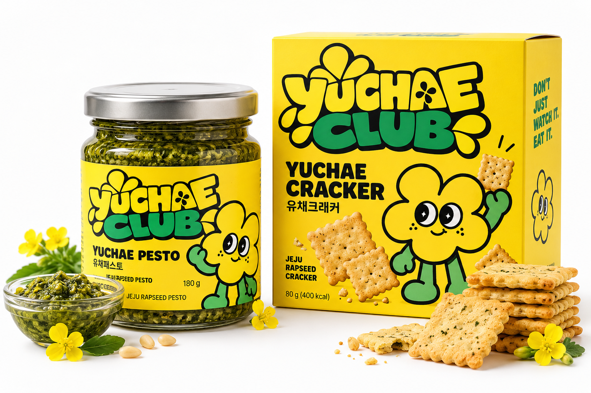

제주를 여러 번 찾은 여행자에게 이제는 익숙해진 감귤, 돌하르방, 그리고 유채꽃 구경. YUCHAE CLUB은 그 익숙함 너머의 새로운 로컬 경험을 제안합니다.
단순히 ‘보기만 하던 유채’를 ‘트렌디한 미식 콘텐츠’로 재해석해 제주 로컬 자원의 새로운 가치를 만듭니다.
JEJU LOCAL FOOD CULTURE
보지만 말고, 먹어봐!
제주 유채를 보고, 먹고, 즐기는
새로운 방식의 로컬 푸드 컬처.

A NEW WAY TO MEET JEJU
제주를 여러 번 찾은 여행자에게 이제는 익숙해진 감귤, 돌하르방, 그리고 유채꽃 구경. YUCHAE CLUB은 그 익숙함 너머의 새로운 로컬 경험을 제안합니다.
단순히 ‘보기만 하던 유채’를 ‘트렌디한 미식 콘텐츠’로 재해석해 제주 로컬 자원의 새로운 가치를 만듭니다.
FROM FIELD TO TABLE
유채페스토와 유채크래커를 중심으로,
제주 유채를 ‘먹는 경험’으로 확장합니다.
FOOD · DRINK · CHARACTER · SPACE
유채는 한 가지 맛에 머물지 않습니다.
한 송이 유채가 식탁을 넘어
일상과 공간으로 이어집니다.
01
유채페스토와 유채크래커 등 5,000~20,000원대 식료품 라인업.
COME AND TASTE THE YELLOW
YUCHAE CLUB POP-UP STORE
* 상세 방문 정보는 확정 후 공개됩니다.